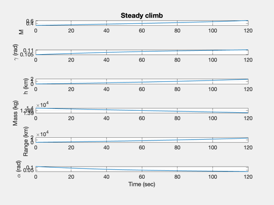
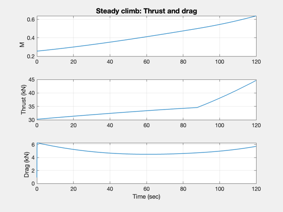

Simulate a steady climb.
The aircraft employs a turbofan to climb.
Things to try:
1. Change the climb angle 2. Try a turbojet engine 3. Change the mass
------------------------------------------------------------------------ See also Turbofan, ComputeAlphaConstantFlightPathAngle, RHS2DPointMass ------------------------------------------------------------------------
Contents
%-------------------------------------------------------------------------- % Copyright (c) 2009, 2014 Princeton Satellite Systems, Inc. % All rights reserved. %--------------------------------------------------------------------------
Data
%------ % Climb angle %------------ angleClimb = 6*pi/180; % State %------ x = [87;angleClimb;0;14000;0]; % [v;gamma;h;mass;x] % Engine %------- d = struct(); d.engine = Turbofan;% Default parameters % Dynamical model %---------------- d.g = 9.806; % Aerodynamics %------------- oswaldEff = 0.95; aspectRatio = 6; d.aero.k = 1/(oswaldEff*pi*aspectRatio); d.aero.cD0 = 0.005; d.aero.cLAlpha = 6; d.aero.s = 40; d.aero.alpha = 0; d.atmData = load('AtmData.txt'); d.cDCL = @SimpleLiftAndDrag; d.tFcn = @Turbofan;
Simulation steps and step size
%-------------------------------
tEnd = 120;
dT = 0.1;
Initialize the plotting array
%------------------------------
n = ceil(tEnd/dT);
xP = zeros(8,n);
Simulation loop
%---------------- for k = 1:n % Current thrust and drag [thrust, drag] = RHS2DPointMass(x,0,d); % Get the angle of attack d.thrust = thrust; d.aero.alpha = ComputeAlphaConstantFlightPathAngle( x, d ); % Plotting data xP(:,k) = [x;d.aero.alpha;thrust;drag]; % Propagate one step x = RK4(@RHS2DPointMass,x,dT,0,d); % Break at zero altitude if( x(3) < 0 ) break end end
Plotting
j = 1:k; xP = xP(:,j); g = StdAtm( xP(3,:), d.atmData ); xP(1,:) = abs(xP(1,:))./g.speedOfSound(j); [t,tL] = TimeLabl( (0:k-1)*dT ); xP(3,:) = xP(3,:)/1000; % Convert to km xP(7:8,:) = xP(7:8,:)/1000; % Convert to kN Plot2D(t,xP(1:6,:), tL, {'M','\gamma (rad)','h (km) ','Mass (kg)', 'Range (km)' '\alpha (rad)'},'Steady climb'); Plot2D(t,xP([1 7 8],:),tL, {'M','Thrust (kN)' 'Drag (kN)'},'Steady climb: Thrust and drag'); %-------------------------------------- % $Id: e856763a0c1876bf919d812434cbf277d3d461d8 $ 